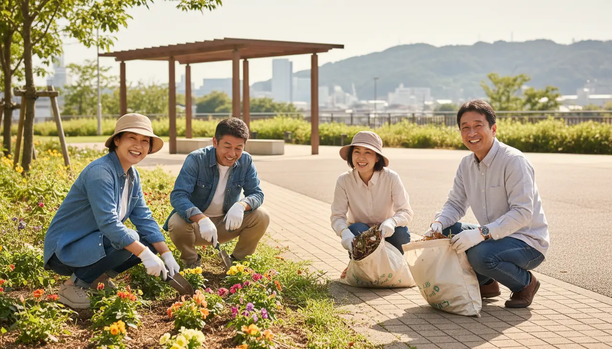

01
「1日から」と「継続」を区別して探す
単発の活動支援から、継続的な団体登録まで、関わり方の幅は活動ごとに異なります。相談窓口や検索ページでは参加期間の区分が案内されていることが多いので、まず自分が無理なく続けられる関わり方を確認します。
Volunteering & civic activity
地域活動や清掃、イベント支援など、同じ目的で動く場では自然な役割分担と会話が生まれます。ここでは団体選びの考え方と、大阪で確認できたボランティア・市民活動の情報をまとめます。

単発の活動支援から、継続的な団体登録まで、関わり方の幅は活動ごとに異なります。相談窓口や検索ページでは参加期間の区分が案内されていることが多いので、まず自分が無理なく続けられる関わり方を確認します。
活動内容、主催団体、連絡先、費用の有無が公式に明記されているかを確認します。相談窓口や中間支援組織を経由すると、団体の概要をあらかじめ把握しやすくなります。
集合場所と時間、服装や持ち物、作業内容と休憩の有無、保険加入の有無などは、事前に確認しておくと当日の負担が減ります。不明な点はセンターや窓口に問い合わせて構いません。
ボランティアや市民活動の名目で高額な商品購入や投資、特定団体への加入を強く勧められた場合は、その場で判断せず、公式の相談窓口に確認してから対応してください。
Verified in Osaka
50PLUSが公式情報で確認できた、大阪のボランティア・市民活動に関する情報です。活動内容・参加条件・申込方法は、必ずリンク先の公式ページで最新情報を確認してください。
ボランティア・市民活動に関する相談、情報提供、団体情報検索を行う大阪市のセンター。団体検索にはエリアや活動内容の絞り込みがあり、『1日から参加可』の区分も用意されている。
エリア：大阪市天王寺区
カテゴリー：ボランティア・地域活動
国際交流活動の情報拠点。公式サイトで『学ぶ・参加する』『ボランティア』『イベントカレンダー』などを案内している。
エリア：大阪市
カテゴリー：国際交流・学び・ボランティア
大阪市公式の市民活動案内。市民活動総合ポータルサイトや、市内の中間支援組織・相談先への入口をまとめている。
エリア：大阪市
カテゴリー：市民活動・ボランティア
大阪市公式のスポーツ情報ページ。市民向けのスポーツイベント、参加者募集、スポーツボランティアなどの情報を確認できる。
エリア：大阪市
カテゴリー：スポーツ・野外活動
認知症を正しく理解し、認知症の方や家族を見守る応援者について学ぶ講座。ボランティア活動に関心がある方にも案内されている。
会場：淀川図書館 多目的室
日時：2026年9月26日（土曜日）14:00〜15:30
定員：25名・事前申込先着順
申込期間：2026年9月6日〜9月25日
初参加の心構えや会話の始め方は、はじめ方ガイドでまとめています。
ボランティア以外のカテゴリーも含めた、公式情報を確認できた活動先の一覧です。